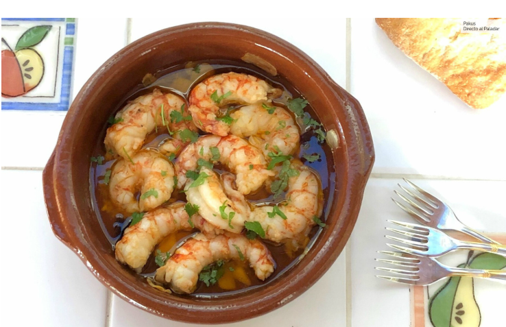

Recipe 2

Description
This is the second recipe. It is delicious and easy to make!
Ingredients:
- Gamba o gambón 250 g
- 2 Dientes de ajo
- 1 Guindilla de Cayena
- 1 Cucharada de aceite de oliva
- Sal
Instructions
- Heat the olive oil in a large pan over medium heat.
- Add the shrimp and cook until they turn pink and are done, about 2-3 minutes.
- Add the garlic and chili pepper. Cook for 1 minute.
- Season with salt to taste.
Back to Home